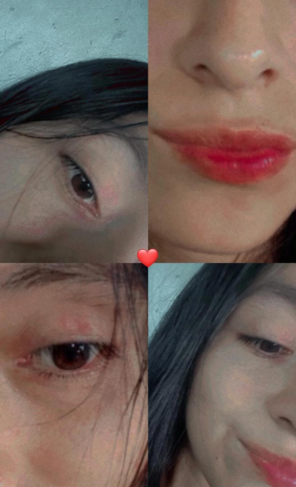
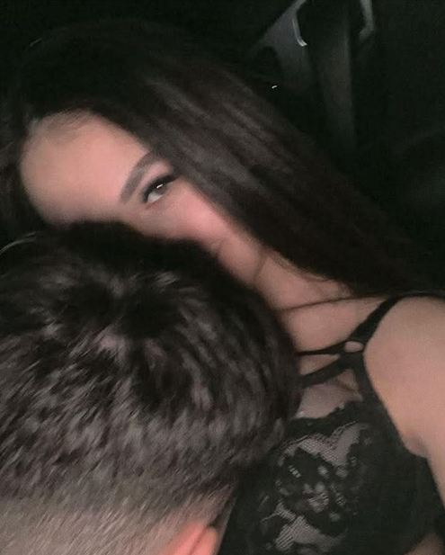
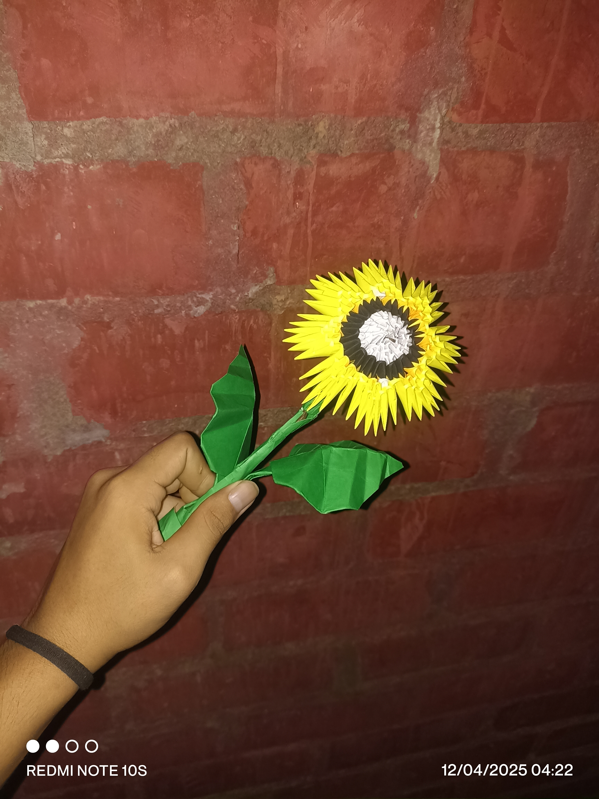
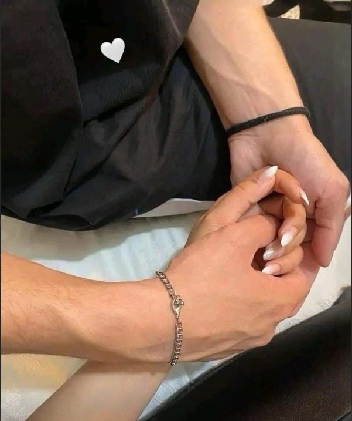
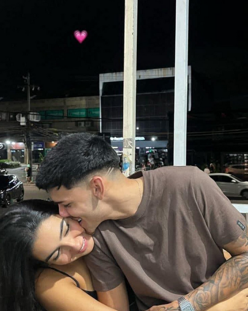

Nuestros Momentos 💫

Tus ojitos y tus labios me enamoran más que mil canciones 😻

Así me miro cuando pienso en ti… todo bobo 🙃💗

Aunque no salgamos juntos, ya estamos en la misma historia 🫂

Un girasol para mi solcito… tú 🌻

Las distancias duelen, pero tú vales cada kilómetro 🚶♂️💘

Te pienso bonito, siempre 🥺💗